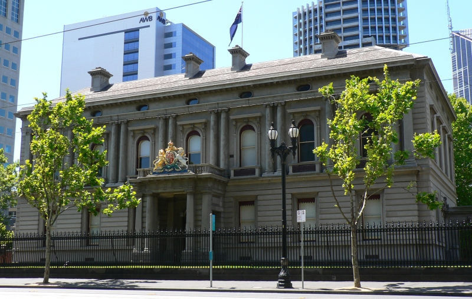

Conference Banquet
Date: Tuesday, March 25th
Time: TBA
Location: The Hellenic Museum, 280 William Street, Melbourne VIC 3000
About the Venue
The Hellenic Museum is Australia's only museum dedicated to showcasing the transformational power of Greek art, history, and culture. Explore 8000 years of Hellenic history and its impacts on the modern world, through ten exhibitions of antiquities and contemporary artworks.
Website: https://www.hellenic.org.au/
Getting There
The venue, the Hellenic Museum, is located at 280 William Street, inside the Former Royal Mint Building. From the Victoria State Library, you can reach the venue as follows:
1. Tram (#30 - Free Tram Zone, ~ 7 minutes):
- Walk to the tram stop Melbourne Central Station at the La Trobe St.
- Take Tram #30 (heading to Central Pier Dockland).
- Get off at Flagstaff Station.
- Turn left (west) onto William Street (if you are facing La Trobe Street).
- Walk 1 minute (about 50 meters) down William Street to the Hellenic Museum.
2. Walk (~ 12 minutes):
- Walk west along La Trobe Street.
- Continue straight until you reach Flagstaff Station.
- At the intersection of La Trobe St. and William St., turn left onto William Street (heading south).
- Walk about 50 meters down William Street to the Hellenic Museum.

ACM SIGIR CHIIR 2025 is hosted on the unceded lands of the Woi wurrung and Boon wurrung language groups of the eastern Kulin nation. We acknowledge the Traditional Custodians of Country throughout Australia, and their continuing connection to culture, community, land, sea, and sky. We pay our respects to Ancestors and Elders past, and present, and extend that respect to all Aboriginal and Torres Strait Islander peoples today.